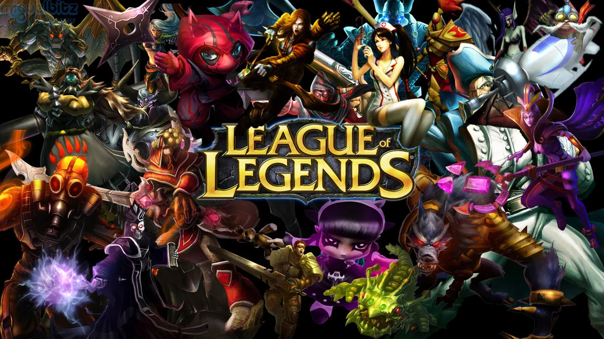

- '임하성'이란?
- 하성법과 하성어에 대해..
- 임하성 관찰일지
임하성 관찰일지
이 페이지는 <'임하성'이란?>과 비슷하므로 <'임하성'이란?>의 내용에 더 세세한
정보를 덧 붙히도록 하겠다.
2006년에 태어났다.저자와는 친한 친구 관계로 아싸는 아니다.
(친구들을 많이 사귐ㅇㅇ)활발한 성격은 아니며 PC방을 제 집 다니듯이
다닌다.한 때 신이였던 적도 있으며 <하성어>를 짓고 <하성법>을 창제함
(자세한건 "하성법과 하성어에 대해.."를 참조) 지금은 신이 아니지만 자신이
신이었던 때를 회상하며 가끔 "난 신이다!"라고 외친적도 있음.
자주 하는 게임으로는 [League Of Legend] 이 있다.
(밑은 [League Of Legend] 의 사진)

자신은 lol을 완죤 잘한다지만 그다지 잘하는 것 같진 않다.(ㅊㅜㅇ?)
<임하성 관찰알지>는 추후에 더 업로드 될 예정이다.
-2018.8.16-